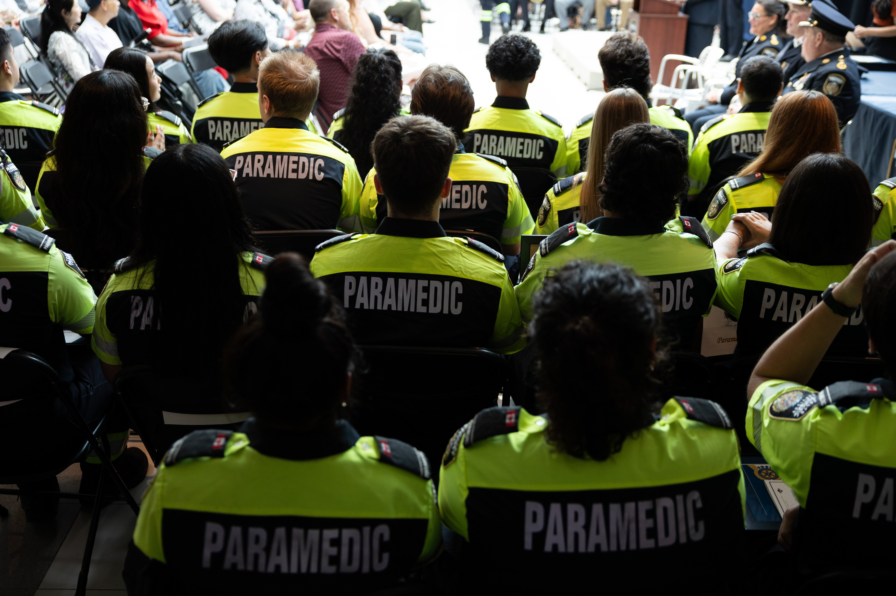

A Star investigation, reviewing detailed records on every ambulance response across Toronto between May 1, 2025 and May 1, 2026 – more than 300,000 calls – reveals an alarming portrait of Torontonians stuck waiting after calling help during emergencies.
They waited during suspected heart attacks and strokes: the kind of emergencies where doctors say every minute waiting for help matters, with tissues starved of oxygen dying bit by bit, worsening a person’s long-term outcomes and odds of survival. They waited after reporting breathing troubles, traumatic injuries, choking and seizures.
More often than not, in the most serious cases, ambulance responses failed to hit the service’s own internal response targets, which are based on provincially-set standards.
The data analysed by the Star shows only 27 per cent of calls assigned the highest severity level, of imminently life threatening conditions, met internal response targets; among potentially life-threatening calls, only 37 per cent hit targets.
A Star investigation found more than 4,600 of these highest priority calls – known as “purple” and “red” calls – had wait times over 30 minutes, including many cases like Duncan’s initially thought to be less serious. More than 1,100 of these wait times stretched above an hour.
Toronto’s paramedic chief, Bikram Chawla, pointed in a sit-down with the Star to all the interventions the service is enacting to try to get this pernicious problem in hand: community paramedics to attend to chronic callers, new recruitment efforts, retention pay to keep their staff from leaving for less stressful jobs. But he knows it hasn’t yet been enough – and the pressure is only building, with a rapidly aging population introducing more complex medical conditions and many Torontonians struggling to access primary, non-emergency care.
They expected demand to rise this year, but it’s shot up twice as fast as their projections.
Under that weight, Chawla can’t say for sure whether this staffing plan will be enough; there were plans before it, which each proved insufficient. “I’m not sure if it will be able to meet demand. I don’t have a crystal ball,” Chawla said, suggesting he had more confidence in saying that continuing to hire would amount to “gradual improvements” to the system.
“I want members of the public to know that we know no one wants to wait. I recognize that. We all recognize that. And we’re trying to make real improvements,” Chawla added. “And, to our staff, we recognize the pressures that they’re under. We’re doing everything possible to improve their working conditions, so that they can provide the best care to our patients.”
Still, to patients and paramedics alike, these waits are signals of a broken system.
On that 2024 evening, an ambulance pulled up outside Graham and Laurel’s home at 10:22 p.m. – four hours and 11 minutes after they first called 9-11.
Paramedics quickly realized the emergency was more serious than they thought. They had to call a second ambulance, which would take more time.
Inside Toronto hospitals, emergency physicians know that every minute matters.
When it comes to a stroke, for example, “time is brain,” says Dr. Garrick Mok, a physician with downtown St. Michael’s Hospital’s emergency department. Every minute that ticks past, more brain cells can die, worsening the injury to a patient and making it harder for them to recover and rehabilitate.
The same goes for cardiac arrest patients, he said, where the heart is starved of oxygen-rich blood.
Response targets
Share of calls that took longer than Toronto Paramedic Services’ official response goal, by final priority.
Thick bars show all calls; thin lines show calls whose priority was unchanged from initial triage. Purple calls are imminently life-threatening; Red calls are potentially life-threatening. Referrals, Code 2 calls and scheduled transfers are excluded.
Source: Toronto Paramedic Services records obtained by the Toronto Star.
“The longer that the muscle is without oxygen and blood supply, the more it’s either dying or not getting the blood supply it needs … that area of the heart might not actually recover.”
At their fastest, Toronto paramedics have responded to stroke cases in less than a minute. But among just one type of stroke call captured in the Star’s database – called CVAs – 261 red and purple level calls took more than 30 minutes, and 68 took more than an hour.
The year of ambulance responses analysed by the Star includes a call for a severe heart attack (known as a STEMI), categorized as “unstable,” which took 37 minutes and 48 seconds for an ambulance to arrive. Three “unstable” STEMI calls took upwards of 20 minutes, and were each categorized upon final assessment as a “red” level priority.
The data also includes strokes with response times above four hours. The most egregious case, in December 2025, was also assigned a red-level priority, but was initially triaged as a much less severe yellow case. The response time was four hours and 36 minutes, the records show. Of the stroke calls, 193 calls of varying severity levels took upwards of an hour between the first 911 call and first ambulance arriving on scene, according to the data.
The response time captured in the data represents the time between the first 9-11 call and the ambulance arriving on scene. It does not factor in the time it takes to reach a patient if they are inside a building, to assess a patient on-site, or to transport them to hospital.
For strokes, Mok said, in-hospital tests are required to determine whether someone can safely receive thrombolytic medication to dissolve a clot and restore oxygen to their brain during a stroke – or if they have a brain bleed, meaning that treatment could kill them.
“You need to get a CT scan,” Mok said.
“That’s why all that timing is so important … you’ve got to get picked up, you’ve got to get brought over, you’ve got to get transferred to our emergency department, you’ve got to get a CT, you’ve got to look at the CT in real time and then we’ve got to decide, are we going to give you this medication?”
Sahil Gupta, another emergency physician in the St. Michael’s ER, said intervention for a patient having a stroke should be done within 3 to 4.5 hours of the stroke, meaning a patient must be brought to hospital, registered, medically assessed and cleared for treatment.
But both Gupta and Mok, as with other medical experts who spoke to the Star, stressed that paramedics’ response times weren’t solely an EMS problem – they were, in their view, a symptom of the broader healthcare system struggling against mounting pressure.
The deterioration of ambulance response times in Toronto has been a slow march. Two years ago, city hall’s top auditor pointed to a problem that had worsened markedly since at least 2019. In that time, auditor general Tara Anderson wrote in a public report, there had been “significant” jumps in how often, and for how long, there was low availability of staffed ambulances across Toronto – rising from 1,300 incidents in 2019 to 6,800 incidents in 2023.
The most critical cases, where not a single staffed ambulance is available across the city, had also jumped – from 29 incidents in 2019 to more than 1,200 four years later, she wrote.
Staffing churn
Paramedics hired and departed in 2024 and 2025.
Source: Records obtained by the Toronto Star through freedom of information legislation.
Anderson pointed to festering problems from long handovers in hospital to a growing reliance on “full-shift overtime,” which had risen 169 per cent in those same four years, adding to the risk of stress-related injuries and staff turnover for frontline workers.
“Timely ambulance emergency response is critical, particularly for people with medical issues requiring urgent attention at the hospital,” the AG’s office wrote. “Every second matters for ambulance emergency response, particularly when it is a matter of life or death.”
Those who spoke to the Star for this story – including physicians, patients and paramedics themselves – stressed that protracted waits for ambulances are a consequence of pressures on the healthcare system rather than failings of individual medics, or the service on its own.
Ambulance demand is rising for a constellation of entangled reasons, experts say: Baby Boomers are getting older, requiring more urgent care. At the same time, more and more Torontonians do not have access to a family doctor, so their needs spill over into the emergency system. Other social crises like worsening drug toxicity only add fuel to the fire.
Staffing, over time, has not kept pace. Anderson’s 2024 report pointed out that it would be “challenging” to make any improvements to ambulance response times without more people on the payroll. When Chow vowed improvements to the service last summer, it came alongside the long-awaited promise of a multi-year staffing plan, at a cost of $52 million.
But gains, each year, are cannibalized by departures. In 2025, Toronto hired 167 new paramedics, but lost 97, according to records obtained via freedom of information legislation. A similar story played out in 2024, when 162 medics were hired and 90 left the service.
In many cases, front-line sources tell the Star, the departures are not fueled by retirements but instead by early- or mid-career paramedics, burnt-out by the relentless pace.
“We were so behind already in staffing that we’re constantly playing catch-up,” one paramedic lamented. “It’s almost impossible to hire enough medics, to both cover your increases in call volumes and backfill all of the gaps that you had for years of austerity.”

The Star spoke with four active Toronto paramedics in reporting this story, along with medics in services elsewhere in the GTA. The Star has agreed not to publish most of these paramedics’ names, outside of union representatives, as most feared speaking critically about their employer and frankly about everyday challenges could endanger their jobs.
In addition to departures – which are on pace for similar numbers this year compared to last, with 44 paramedics leaving Toronto as of June – some of the overall frontline work force is not available to respond to emergencies. While numbers fluctuate by the day, data obtained by the Star shows that at the end of last year, more than five per cent of medics – 79 out of 1,551 – were considered inactive and unavailable for frontline deployment. More and more, medics are also getting hurt on the job, with 543 “lost time” injuries reported to workplace insurance within TPS last year, having inched up steadily from 418 injuries in 2021.
Among those were 263 musculoskeletal injuries related to exertion, repetition, awkward posture or vibration/jarring, according to a city hall report, 77 injuries from slips, trips, missteps and falls, and 106 exposures to harmful substances, environments or stress.
The paramedic service had one of the highest severity of injuries among city divisions, similarly to firefighters and shelter workers; these divisions have also seen the highest number of workplace injury claims for mental or emotional illnesses and disorders, the city reported – a trend that has been ramping up continually since 2021, and is expected to continue. These injuries, the city reported, often come with extended periods of recovery.
Chawla, speaking with the Star in September, said despite recent efforts to increase staffing levels, lighten the load on paramedics and better support their teams, the current demand on the paramedic service is still putting frontline workers at “elevated” risk of stress injuries.
“Things are tough out there. They’re tougher than when I was out on the road, and we know our staff are very dedicated. They’re committed to their patients and they want to provide the best care possible. I’m in awe of the work that they do every single day. The risk is still there,” he said.
Across the healthcare sector, including but not limited to the paramedic service, he said stress piled on during the pandemic; they were still feeling that impact today.
The paramedic service says its multi-year staffing plan is hitting its targets so far. In total, that plan involves adding 362 new roles between 2025 and 2028 – 347 of those being frontline workers, including 331 paramedics and 16 supervisors – to “enhance emergency response capacity.” Since 2025, it has added 180 “net” new paramedics, the agency said.
But they acknowledged that departures are meanwhile paring numbers back. Of all the new paramedics hired in Toronto in 2025, around 18 per cent have already left.
“We recognize this is a very, very busy place. I’m not going to pull any punches about that,” Chawla, the paramedic chief, said about the service’s resignation numbers.
The pace and workload drove some medics to leave, he acknowledged. So did the cost of living in Toronto, or the frustration of commuting from other suburbs. They were working on implementing better recruitment and retention initiatives, he said, including higher pay for incoming paramedics and annual retention pay incentives to keep people within the city service. It was still early, but he said there have been hopeful signs that those are helping.
On the ground-level, paramedics still feel their teams’ energy spread thin.
There used to be time to decompress after calls, said one veteran paramedic with experience responding to emergencies downtown and in surrounding areas, especially the “hot calls” that grappled with harder, heavier situations.
“Now, it’s kind of turning into automatons or robots. You’re just a body in a seat attending the next call, next call, next call.”
The service sees hospitals as a key pinch point, with the handoff between paramedics and ER workers stretching out so that medics are spending some 60 per cent of their shifts at the hospital.
There had been some improvement since the height of the pandemic on that front, Chawla told the Star – but compared to pre-pandemic metrics, it was still looking worse. That was a significant change from when he started with the service back in 1990, Chawla said.
“There’s not as much consistency as we would want from one hospital to the next in terms of their offload performance,” he added. “That’s another part of this very complex issue.”
An average shift
Share of an average paramedic’s daily shift, according to Toronto Paramedic Services.
Source: Toronto Paramedic Services.
But to some paramedics, cutting down time in hospital just means asking the existing workforce to do more than they’re already juggling – at a time when many frontline workers are already feeling stretched to their capacity, ricocheting around the city from call to call.
One especially demoralizing kind of shift, one longtime paramedic told the Star, was when your ambulance was dispatched to a lower-level priority call, you drove to the scene, and shortly before arriving, dispatch got in touch to say you would be re-routed to something more urgent. Sometimes, the paramedic said, you could be as close as the parking lot.
What that meant was leaving the first patient – potentially a person who was in pain or distress, if not as life-threatening as another emergency – to wait for the next available ambulance, sometimes after they’d already been waiting for some time for help to arrive.
And it was time spent on the road that didn’t wind up helping anyone, that paramedic lamented. “Who is keeping track of the wasted minute times of driving around in circles?”
Duncan’s wife, Laurel Purvis, first dialed 9-11 at 6:11 p.m, about 45 minutes after Duncan initially fell, as he tried to see if the pain dissipated and he could stand up on his own first.
The dispatcher triaged his situation – a man with a cancer diagnosis in a second-floor unit, with an injury from a bike accident but no visible deformity or bleeding. The location of his injury was determined to be non-dangerous. Duncan’s case, overall, was deemed low-acuity – despite the pain he was reporting. So, it was put in the queue, and the two of them waited.
Purvis called 9-11 back at 7:08 p.m., telling dispatchers that Duncan was in worsening pain.
“I just wondered if there was any sense of when they might come,” Purvis asked.
“Unfortunately, Laurel, there is still a delay,” dispatch replied. “We don’t have any available ambulances just yet, but as soon as we have one available, we’ll be sending it to you, ok?”
Again, they waited. Purvis called a third time – this time, at 8:52, after nearly three hours. Still, they were told to hold tight. Toronto’s paramedic service wasn’t yet available to help.
“I do understand that I was safe in my apartment and not unconscious,” Duncan recalled of that long evening. But even after self-medicating to try to dull the injury, every hour that ticked past was a painful one. “According to the specialist who operated, a bone break through cancer – her phrase – it’s the ultimate pain. So yeah, I was not doing too well.”
Extreme response times
Each dot is an ambulance response that took at least one hour. Calls are sorted by final priority; response time increases from left to right.
Source: Toronto Paramedic Services records obtained by the Toronto Star.
An ambulance was finally assigned to the call at 10:09 p.m., arriving by 10:22, records show.
That’s when it became clear to the paramedics on the scene: this was a more serious case than the dispatch triage level had suggested. In fact, it was so serious that they needed different paramedics, ones with the ability to administer potent IV painkillers in order to extricate Duncan from the upstairs unit without causing him more undue pain.
A second ambulance was assigned at 10:34 p.m. and arrived on the scene within minutes.
Experts warn that slow medical intervention can turn low- or moderate emergencies into more pernicious ones. Over the 12 months of data analyzed by the Star, falls were one of the most common reasons for a 9-11 call. For thousands of them, response times stretched beyond the targeted times. In 140 cases, the response time was three hours or longer.
Calls involving falls
Fall calls with ambulance response times of at least one and three hours.
Source: Toronto Paramedic Services records obtained by the Toronto Star.
“Lying on a hard surface where muscles and tissue are pressed hard by one’s body weight against a hard surface can quickly lead to muscle and tissue breakdown – and what we call rhabdomyolysis – this condition and other associated issues can lead to a deteriorating health situation for a frail older person,” said Dr. Samir Sinha, a geriatrician who works in Toronto’s Sinai Health System and the University Health Network.
The muscle breakdown can release toxins causing kidney failure, Sinha said. Fluid could build up in their lungs, or pressure sores on their skin. One distressing reality is a person who cannot move for multiple hours may have to wait in their own urine, he told the Star.
After three hours on the ground, Sinha said hospitalization becomes very likely – not solely because of the initial injury, but because of the conditions that can develop while immobile.
The paramedic service, in a statement, said the majority of especially urgent calls with waits above 30 minutes – the red and purple ones – are calls like Duncan’s, where the initial priority did not reflect the patient’s actual condition upon arrival and was bumped up.
Nearly all cases that changed priority were patients whose condition was worse than initially thought, the Star’s analysis shows. Even removing cases where the priority level changed, the service missed its targets for red and purple level calls more often than it reached them.
Priority changes
Direction of change among calls with both an initial and final priority recorded.
Initial priority is missing for 77.9% of calls, so its upgrade/down-grade comparison only represents records where an initial priority was available.
Source: Toronto Paramedic Services records obtained by the Toronto Star.
Paramedics who spoke to the Star say there are many reasons a call priority is upgraded, from a patient’s medical condition worsening during their wait for an ambulance to a caller downplaying their symptoms initially or having trouble properly communicating them to the 9-1-1 operator, including cases involving language barriers or mental health challenges.
But as the service pointed to these caveats, it also confirmed in a statement that it was concerned about patients' health outcomes being impacted during the extended wait times identified by the Star.
“Some high-priority calls experience delays, particularly during periods when emergency call demand is elevated and ambulance availability is low,” wrote Dineen Robinson, acting commander of policy, projects and process improvement – also citing paramedic staffing, hospital offload times, and travel conditions among pressures at play.
Charles Labelle, a longtime paramedic who serves as vice-chair at the local union, says frontline medics know there is only so much that can be gleaned from a telephone triage – and that patients are sometimes sicker than they realize when dispatched to help. That was one risk in an overstretched system relying on this kind of triaging.
And even if someone wasn’t in clear danger, Labelle said, they might be weathering a long wait in pain.
“Somebody who might have, let’s say, a broken hip, as painful as it is, might have to wait an hour or two hours before they get an ambulance,” Labelle said.
That wasn’t what people expected – when they called 9-1-1, he said, people wanted help within minutes, not hours.
“That’s the downfall of prioritizing the calls to the sickest,” he said. “Somebody’s going to have to wait – unless you have adequate staffing to meet all the needs of all your calls.”
Over the course of the last year, the ambulance data obtained by the Star shows that the service has made a small improvement on average response times for purple calls. From May 2025 to the end of April 2026, response times dropped to an average of 469 seconds (a little less than eight minutes) from an average of 538 seconds (about nine minutes).
But every other level of urgency stagnated or worsened over this same time period.
The paramedic service, asked about the Star’s findings, said it measures outcomes differently – categorizing calls more simply as “high” or “low” priority, meaning life-threatening or not. Last year, the service said its response time to 90 per cent of high priority calls – red and purple calls, generally – was 14.5 minutes, which has come down in 2026. But the tradeoff is that low priority call responses, including orange and yellow calls, have worsened – by 12.2 per cent, compared to the 9.7 per cent improvement for high priority incidents.
“These trends are consistent with Toronto Paramedic Services' efforts to improve resource availability for high-priority emergencies and direct available paramedic resources to critically ill or injured patients,” the service said, calling the challenges impacting response times “complex,” and extending beyond paramedic deployment into broader health system issues.
Call demand for paramedics is expected to keep rising at rates between two and five per cent a year as the city grows and the population ages, the service’s statement said.
When few ambulances are available, the service says it does what it can to support patient safety, including having a patient safety advocate review calls that have been waiting “for an extended period” and doing call-backs to identify calls that might need reprioritization.
Purvis, Duncan’s wife, looks back on that long September night waiting for help, and sees sharp contrasts. In Duncan’s nine years with cancer, she said the in-hospital care he’s received has been “incredible.” But on the frontlines of the healthcare system, she sees the cracks. She’s seen people inside the emergency room who she believes could have been kept out if they could access earlier, preventative care, primary health services, even more basic needs like housing. “It just seems like emergency has sort of become this catch-all.”
That pressure mounts. And people, en masse, are left waiting.
A lot of what happened that night feels, in retrospect, like a blur – a screen her mind has thrown over a distressing, traumatic memory of calling back, over and over, and asking: where were the paramedics? When would they be able to get there and help her husband? It was a stress that only lifted when the first team of paramedics finally pulled up outside.
“Once they got here, I certainly felt a huge amount of relief.”